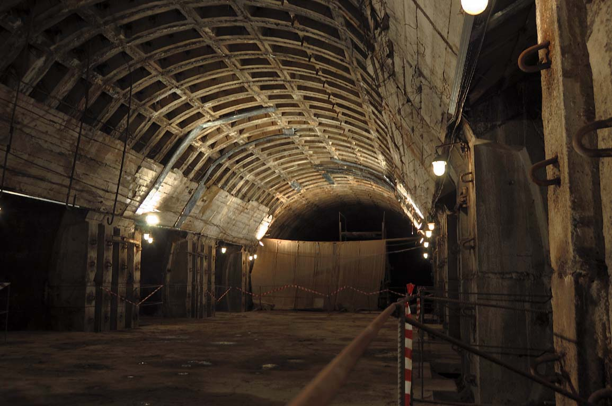

About
ENG 🇬🇧 -> JPN 🇯🇵 -> UKR 🇺🇦
[ENG]
Lvivska Brama is a station of the Kyiv subway system that is not currently open. It is located on the Syretsko-Pecherska line between the Zoloti Vorota and Lukianivska stations. Construction began in mid-1991, but due to the lack of a comprehensive solution for the reconstruction of Lvivska Square, where the station is planned to exit, and a lack of funds, the work was frozen in 1996.
Passing by the station in a subway car on the section between Lukianivska and Zoloti Vorota stations, one can see the lighted platforms and partially lined track walls of the station, which the city authorities are still unable to complete and put into operation. The central hall of the station is almost complete, but the inclined escalator tunnel has not been built. The station is located near Lvivska Square, which is an extremely busy place (the narrow streets of Old Kyiv do not satisfy the flow of traffic), and the opening of the metro could facilitate and speed up transportation.
The city authorities and the subway management periodically declare their efforts to complete the station, but it goes no further than words. One of the options for building an exit from the station was developed by PJSC Kharkivmetroproekt. The next date for the station's opening is currently 2025.
Currently, the only practical use of the station is visible if you go from Lukianivska towards the Golden Gate. Near the station, there are 3D shields with an advertising video that transmits images to the car using an interesting technology, where the car itself serves as a tape, moving at a high speed relative to stationary images.
In February 2022, the Kyiv Metro utility announced a tender for the development of a project to complete the Lvivska Brama station. The expected purchase price was UAH 73,439,266.67. The tender was canceled in June 2022 due to the introduction of martial law. It was planned to complete the Lvivska Brama metro station by 2025.
[JPN]
リヴィウ・ブラマはキーウ地下鉄の駅で、現在は営業していない。シレツコ・ペチェルスカヤ線のゾロティ・ヴォロタ駅とルキヤニフスカ駅の間にある。建設は1991年半ばに始まったが、駅が出る予定のリヴィフスカ広場の再建に包括的な解決策がなく、資金不足のため、1996年に工事は凍結された。
ルキアニフスカ駅とゾロティ・ヴォロタ駅の間の区間を地下鉄車両で通過すると、ライトアップされたホームや部分的に並べられた線路の壁が見える。駅の中央ホールはほぼ完成しているが、傾斜エスカレーターのトンネルは建設されていない。この駅はリヴィウスカ広場の近くにあり、非常に交通量の多い地域（キーウ旧市街の狭い通りは交通に適していない）であるため、地下鉄が開通すれば交通の便がよくなり、スピードアップが期待できる。
市当局と地下鉄経営陣は定期的に駅を完成させる意向を表明しているが、それは言葉だけである。ハリコフ・メトロプロエクト社（PJSC ルキヤニフスカ）は、駅の出口を建設するオプションの1つを開発した。現在、駅の開業予定日は2025年となっている。
現時点では、ルキアニフスカからゴールデンゲート方面へ車を走らせると、この駅の実用的な利用が確認できるのみである。駅の近くには、広告映像が映し出された3Dシールドがあり、車両自体がテープの役割を果たし、静止した映像に対して高速で移動するという面白い技術を使って車両に映像を送信している。
2022年2月、キーウ地下鉄公社はリヴィウスカ・ブラマ駅完成プロジェクトの開発入札を発表した。予定落札価格は73,439,266.67フリヴニャだった。この入札は、戒厳令の導入により2022年6月に中止された。2025年までに地下鉄リヴィウスカ・ブラマ駅を完成させる予定だった。
[UKR]
«Льві́вська бра́ма» — станція Київського метрополітену, яку наразі не відкрито. Розташована на Сирецько-Печерській лінії між станціями «Золоті ворота» і «Лук'янівська». Будівництво розпочалося у середині 1991 року, але через відсутність комплексного рішення щодо реконструкції Львівської площі, на яку заплановано вихід зі станції, та брак коштів роботи заморожені у 1996 році.
Проїжджаючи повз станцію у вагоні метро на дільниці між станціями «Лук'янівська» та «Золоті ворота», можна побачити освітлені платформи та частково облицьовані колійні стіни станції, яку міська влада все ніяк не може добудувати та ввести в експлуатацію. Центральний зал станції практично побудований, але похилий ескалаторний тунель так і не споруджений. Станція розташована поблизу Львівської площі, яка є надзвичайно завантаженим місцем (вузькі вулиці Старого Києва не задовольняють потік транспорту), і відкриття метро могло б полегшити та пришвидшити транспортне сполучення.
Влада міста та керівництво метрополітену періодично декларує намагання добудувати станцію, однак далі слів справа не йде. Один з варіантів проєкт побудови виходу зі станції було розроблено ПАТ «Харківметропроект». Черговою датою відкриття станції нині називають 2025 рік.
Наразі єдине практичне застосування станції помітне, якщо їхати з «Лук'янівської» в бік «Золотих воріт». Поблизу станції розміщені 3D-щити з рекламним відеороликом, який передає зображення у вагон за цікавою технологією, де стрічкою слугує сам вагон, рухаючись на значній швидкості відносно стаціонарних картинок.
У лютому 2022 року комунальне підприємство «Київський метрополітен» оголосило тендер на розробку проєкта добудови станції «Львівська брама». Очікувана вартість закупівлі становить 73 439 266,67 гривень. Тендер було скасовано в червні 2022 року через введення воєнного стану. Планувалось добудувати станцію метро «Львівська брама» до 2025 року.
